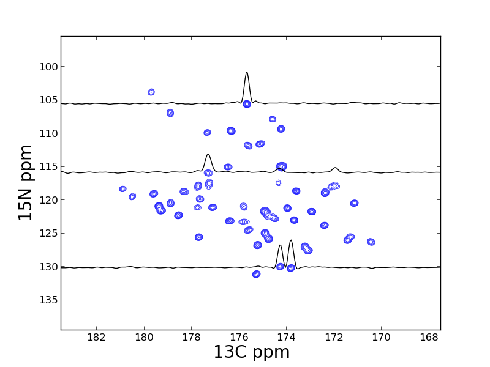
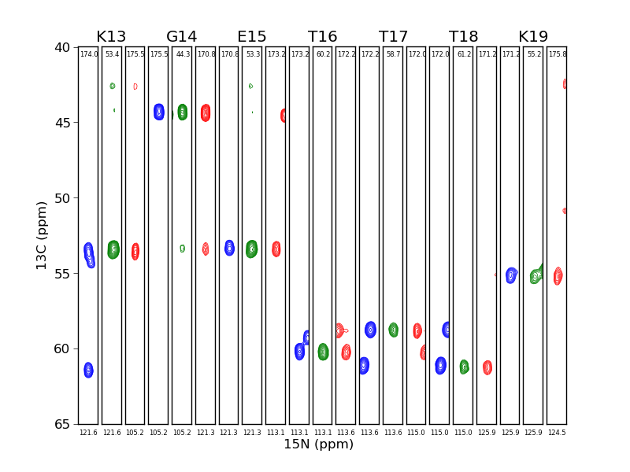

What is nmrglue?
Nmrglue is a module for working with NMR data in Python. When used with the NumPy, SciPy, and matplotlib packages nmrglue provides a robust environment for rapidly developing new methods for processing, analyzing, and visualizing NMR data. Nmrglue also provides a framework for connecting existing NMR software packages.
What can nmrglue do?
Nmrglue has the ability to read, write and convert between a number of NMR file formats including Agilent/Varian, Bruker, NMRPipe, Sparky, SIMPSON, and Rowland NMR Toolkit files. The files, which are represented in Python as dictionaries of spectral parameters and NumPy ndarray objects, can be easily examined, modified and processed as desired.
Nmrglue provides a number of functions for processing NMR data such as apodization, spectral shifting, Fourier and other transformations, baseline smoothing and flattening, and linear prediction modeling and extrapolation. In addition new processing schemes can be implemented easily using the nmrglue provided functions and the multitude of numerical routines provided by the NumPy and SciPy packages.
When used in conjunction with the matplotlib (or other) python plotting library nmrglue can be used to create publication quality figures of NMR spectrum or examine data interactively. For example:
 Nmrglue can be used to analysis NMR data, with routines to perform peak picking, multidimensional lineshape fitting (peak fitting), and peak integration provided within the package. New analysis methods can be rapidly developed and tested in Python or by integrating Fortran and C/C++ code.
Installation
nmrglue requires the following packages
and the following are recommended (especially if you wish to run the examples):
To install nmrglue on windows download and run the Windows binary (.exe). On Linux and OS X download the tar file, extract, and run:
$ python setup.py install
Additional detail on installing nmrglue can be found in the Install Guide
Documentation
Documentation for nmrglue can be found in the online documentation or using Python's built in help system. New users of the package may want to read the nmrglue tutorial to learn about many useful features. A number of examples are also provided for those wishing to see nmrglue is action. The reference guide may be of use to those needing a detailed information about the functions and classes in nmrglue. There is also a Wiki for user contributed hints and code snippets. A video describing nmrglue is also available from the talk given by Jonathan Helmus at the 2012 SciPy conference.
There is also an article in the Journal of Biomolecular NMR on nmrglue. The examples from this article are available online along with corresponding data.
Citing nmrglue
The article describing nmrglue has been published in the Journal of Biomolecular NMR. Please cite nmrglue as:
J.J. Helmus, C.P. Jaroniec, Nmrglue: An open source Python package for the analysis of multidimensional NMR data, J. Biomol. NMR 2013, 55, 355-367. [doi]
Getting help
Nmrglue has a mailing list which you can ask question on and request help. Also feel free to email the creator of nmrglue, Jonathan J. Helmus directly. If you want to receive emails when a new version of nmrglue is released subscribe to the nmrglue-announce mailing list.
Contributing
Nmrglue is an open source software package distributed under the New BSD License. Source code for the package is available on GitHub. Feature requests and bug reports can be submitted to the Issue tracker, posting to the nmrglue mailing list or contacting Jonathan Helmus directly. Contributions of source code or example are always appreciated from both developers and users.